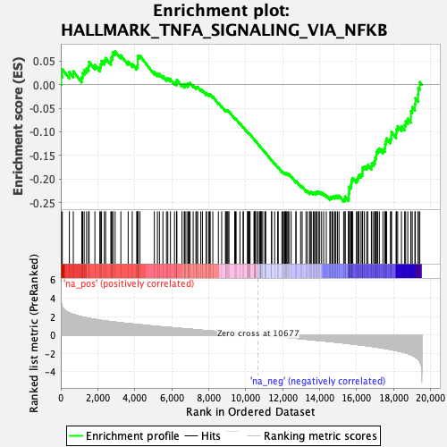
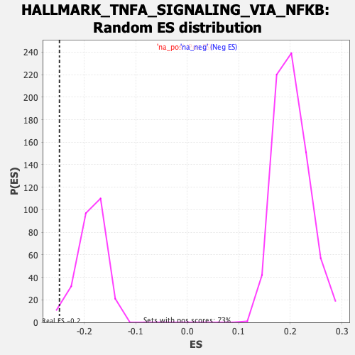

| | | Dataset | CK_basal |
| Phenotype | NoPhenotypeAvailable |
| Upregulated in class | na_neg |
| GeneSet | HALLMARK_TNFA_SIGNALING_VIA_NFKB |
| Enrichment Score (ES) | -0.24818619 |
| Normalized Enrichment Score (NES) | -1.3364111 |
| Nominal p-value | 0.022140222 |
| FDR q-value | 0.0774849 |
| FWER p-Value | 0.492 |
Table: GSEA Results Summary

Fig 1: Enrichment plot: HALLMARK_TNFA_SIGNALING_VIA_NFKB
Profile of the Running ES Score & Positions of GeneSet Members on the Rank Ordered List
| SYMBOL | RANK IN GENE LIST | RANK METRIC SCORE | RUNNING ES | CORE ENRICHMENT | | 1 | YRDC | 24 | 3.491 | 0.0185 | No |
| 2 | ZBTB10 | 82 | 3.064 | 0.0329 | No |
| 3 | TNF | 465 | 2.400 | 0.0267 | No |
| 4 | IL1A | 677 | 2.225 | 0.0284 | No |
| 5 | PTPRE | 1134 | 1.974 | 0.0160 | No |
| 6 | HES1 | 1184 | 1.952 | 0.0245 | No |
| 7 | B4GALT1 | 1265 | 1.915 | 0.0312 | No |
| 8 | SQSTM1 | 1395 | 1.861 | 0.0350 | No |
| 9 | G0S2 | 1503 | 1.811 | 0.0397 | No |
| 10 | PTX3 | 1531 | 1.803 | 0.0485 | No |
| 11 | F2RL1 | 1843 | 1.696 | 0.0420 | No |
| 12 | TNFAIP6 | 2110 | 1.614 | 0.0374 | No |
| 13 | CEBPB | 2161 | 1.598 | 0.0439 | No |
| 14 | CCL20 | 2204 | 1.582 | 0.0506 | No |
| 15 | HBEGF | 2357 | 1.541 | 0.0515 | No |
| 16 | RIPK2 | 2424 | 1.528 | 0.0567 | No |
| 17 | KLF2 | 2709 | 1.450 | 0.0502 | No |
| 18 | DUSP4 | 2728 | 1.446 | 0.0575 | No |
| 19 | PDE4B | 2800 | 1.428 | 0.0619 | No |
| 20 | CXCL3 | 2815 | 1.426 | 0.0692 | No |
| 21 | MYC | 2938 | 1.396 | 0.0708 | No |
| 22 | CLCF1 | 3248 | 1.323 | 0.0623 | No |
| 23 | TNIP1 | 3644 | 1.240 | 0.0489 | No |
| 24 | OLR1 | 3864 | 1.194 | 0.0443 | No |
| 25 | IL23A | 4106 | 1.149 | 0.0384 | No |
| 26 | SMAD3 | 4156 | 1.137 | 0.0422 | No |
| 27 | MAFF | 4161 | 1.136 | 0.0485 | No |
| 28 | IL1B | 4162 | 1.136 | 0.0549 | No |
| 29 | TUBB2A | 4164 | 1.136 | 0.0613 | No |
| 30 | TNFRSF9 | 4279 | 1.110 | 0.0617 | No |
| 31 | CXCL2 | 5060 | 0.959 | 0.0267 | No |
| 32 | PHLDA2 | 5226 | 0.927 | 0.0234 | No |
| 33 | SERPINB2 | 5335 | 0.909 | 0.0230 | No |
| 34 | DUSP5 | 5523 | 0.877 | 0.0183 | No |
| 35 | FUT4 | 5716 | 0.844 | 0.0131 | No |
| 36 | TNFAIP2 | 5787 | 0.832 | 0.0142 | No |
| 37 | IER3 | 5931 | 0.806 | 0.0114 | No |
| 38 | CD69 | 6149 | 0.766 | 0.0045 | No |
| 39 | PLAUR | 6260 | 0.746 | 0.0030 | No |
| 40 | SPSB1 | 6262 | 0.745 | 0.0072 | No |
| 41 | STAT5A | 6279 | 0.743 | 0.0105 | No |
| 42 | PPP1R15A | 6555 | 0.697 | 0.0002 | No |
| 43 | SOCS3 | 6682 | 0.675 | -0.0025 | No |
| 44 | IL12B | 6685 | 0.674 | 0.0013 | No |
| 45 | ZC3H12A | 6764 | 0.661 | 0.0010 | No |
| 46 | IFIH1 | 6874 | 0.644 | -0.0010 | No |
| 47 | TRIB1 | 6876 | 0.643 | 0.0026 | No |
| 48 | TNFSF9 | 6941 | 0.633 | 0.0028 | No |
| 49 | KLF4 | 6994 | 0.623 | 0.0037 | No |
| 50 | LDLR | 7160 | 0.595 | -0.0015 | No |
| 51 | PLAU | 7307 | 0.569 | -0.0059 | No |
| 52 | GEM | 7349 | 0.560 | -0.0048 | No |
| 53 | TLR2 | 7405 | 0.549 | -0.0045 | No |
| 54 | EFNA1 | 7571 | 0.522 | -0.0101 | No |
| 55 | NR4A2 | 7660 | 0.507 | -0.0118 | No |
| 56 | SERPINB8 | 7861 | 0.475 | -0.0195 | No |
| 57 | SNN | 7876 | 0.473 | -0.0175 | No |
| 58 | EDN1 | 7991 | 0.454 | -0.0209 | No |
| 59 | CCND1 | 8045 | 0.445 | -0.0211 | No |
| 60 | CXCL6 | 8081 | 0.439 | -0.0204 | No |
| 61 | NFKBIE | 8222 | 0.417 | -0.0253 | No |
| 62 | PLK2 | 8522 | 0.365 | -0.0387 | No |
| 63 | CSF2 | 8702 | 0.336 | -0.0460 | No |
| 64 | SDC4 | 8904 | 0.301 | -0.0547 | No |
| 65 | LAMB3 | 8938 | 0.296 | -0.0548 | No |
| 66 | LIF | 8981 | 0.288 | -0.0553 | No |
| 67 | SERPINE1 | 8999 | 0.283 | -0.0546 | No |
| 68 | KLF10 | 9047 | 0.276 | -0.0555 | No |
| 69 | ID2 | 9097 | 0.269 | -0.0565 | No |
| 70 | TRAF1 | 9403 | 0.215 | -0.0710 | No |
| 71 | GCH1 | 9451 | 0.207 | -0.0723 | No |
| 72 | JUN | 9481 | 0.203 | -0.0727 | No |
| 73 | CD80 | 9690 | 0.171 | -0.0825 | No |
| 74 | JAG1 | 9861 | 0.138 | -0.0905 | No |
| 75 | RELA | 9876 | 0.136 | -0.0904 | No |
| 76 | BCL3 | 10095 | 0.103 | -0.1011 | No |
| 77 | SLC2A6 | 10133 | 0.097 | -0.1025 | No |
| 78 | GADD45A | 10137 | 0.097 | -0.1021 | No |
| 79 | FOSB | 10154 | 0.093 | -0.1024 | No |
| 80 | PTGS2 | 10201 | 0.084 | -0.1043 | No |
| 81 | SLC16A6 | 10208 | 0.082 | -0.1042 | No |
| 82 | IER5 | 10234 | 0.077 | -0.1050 | No |
| 83 | DDX58 | 10449 | 0.043 | -0.1158 | No |
| 84 | TANK | 10470 | 0.040 | -0.1167 | No |
| 85 | TGIF1 | 10509 | 0.032 | -0.1184 | No |
| 86 | FOSL2 | 10510 | 0.031 | -0.1183 | No |
| 87 | NINJ1 | 10526 | 0.029 | -0.1189 | No |
| 88 | EHD1 | 10611 | 0.014 | -0.1231 | No |
| 89 | CDKN1A | 10687 | -0.002 | -0.1270 | No |
| 90 | TNIP2 | 10766 | -0.016 | -0.1310 | No |
| 91 | BCL2A1 | 10791 | -0.022 | -0.1321 | No |
| 92 | TRIP10 | 10808 | -0.025 | -0.1328 | No |
| 93 | DUSP1 | 10824 | -0.029 | -0.1334 | No |
| 94 | DRAM1 | 10864 | -0.036 | -0.1352 | No |
| 95 | CD44 | 10923 | -0.044 | -0.1379 | No |
| 96 | KLF9 | 11037 | -0.064 | -0.1434 | No |
| 97 | BIRC3 | 11052 | -0.066 | -0.1438 | No |
| 98 | CXCL11 | 11084 | -0.071 | -0.1450 | No |
| 99 | CXCL10 | 11398 | -0.126 | -0.1605 | No |
| 100 | SLC2A3 | 11405 | -0.127 | -0.1600 | No |
| 101 | KLF6 | 11566 | -0.156 | -0.1674 | No |
| 102 | CD83 | 11729 | -0.183 | -0.1748 | No |
| 103 | PNRC1 | 11760 | -0.188 | -0.1753 | No |
| 104 | BTG1 | 11958 | -0.223 | -0.1842 | No |
| 105 | ICOSLG | 12010 | -0.232 | -0.1855 | No |
| 106 | TIPARP | 12083 | -0.242 | -0.1879 | No |
| 107 | IL18 | 12110 | -0.247 | -0.1878 | No |
| 108 | BHLHE40 | 12159 | -0.259 | -0.1889 | No |
| 109 | MAP2K3 | 12184 | -0.264 | -0.1886 | No |
| 110 | CCRL2 | 12196 | -0.266 | -0.1877 | No |
| 111 | GFPT2 | 12270 | -0.279 | -0.1899 | No |
| 112 | MXD1 | 12327 | -0.289 | -0.1911 | No |
| 113 | SPHK1 | 12332 | -0.289 | -0.1897 | No |
| 114 | RCAN1 | 12457 | -0.315 | -0.1943 | No |
| 115 | CCL5 | 12714 | -0.360 | -0.2056 | No |
| 116 | SGK1 | 12723 | -0.361 | -0.2039 | No |
| 117 | IRS2 | 12970 | -0.411 | -0.2143 | No |
| 118 | IER2 | 13053 | -0.428 | -0.2161 | No |
| 119 | CCL2 | 13262 | -0.471 | -0.2242 | No |
| 120 | BMP2 | 13350 | -0.488 | -0.2260 | No |
| 121 | CFLAR | 13469 | -0.508 | -0.2292 | No |
| 122 | IL7R | 13496 | -0.513 | -0.2277 | No |
| 123 | KDM6B | 13551 | -0.522 | -0.2275 | No |
| 124 | PER1 | 13654 | -0.542 | -0.2297 | No |
| 125 | EGR1 | 13694 | -0.552 | -0.2286 | No |
| 126 | CEBPD | 13772 | -0.569 | -0.2294 | No |
| 127 | CXCL1 | 13832 | -0.581 | -0.2291 | No |
| 128 | NAMPT | 13845 | -0.584 | -0.2264 | No |
| 129 | ETS2 | 13938 | -0.602 | -0.2278 | No |
| 130 | TAP1 | 14007 | -0.614 | -0.2278 | No |
| 131 | NFKB1 | 14106 | -0.632 | -0.2293 | No |
| 132 | ACKR3 | 14218 | -0.654 | -0.2314 | No |
| 133 | TNC | 14359 | -0.680 | -0.2348 | No |
| 134 | RHOB | 14549 | -0.717 | -0.2405 | No |
| 135 | FJX1 | 14586 | -0.727 | -0.2383 | No |
| 136 | FOSL1 | 14665 | -0.748 | -0.2381 | No |
| 137 | BTG3 | 14726 | -0.756 | -0.2369 | No |
| 138 | RNF19B | 14819 | -0.776 | -0.2373 | No |
| 139 | IL6 | 14877 | -0.785 | -0.2358 | No |
| 140 | GADD45B | 14965 | -0.801 | -0.2357 | No |
| 141 | EIF1 | 15047 | -0.817 | -0.2353 | No |
| 142 | PFKFB3 | 15297 | -0.875 | -0.2432 | Yes |
| 143 | PMEPA1 | 15375 | -0.892 | -0.2422 | Yes |
| 144 | ATF3 | 15379 | -0.893 | -0.2373 | Yes |
| 145 | BCL6 | 15564 | -0.942 | -0.2415 | Yes |
| 146 | BIRC2 | 15575 | -0.946 | -0.2366 | Yes |
| 147 | NFKB2 | 15576 | -0.946 | -0.2313 | Yes |
| 148 | REL | 15597 | -0.952 | -0.2269 | Yes |
| 149 | EGR3 | 15601 | -0.953 | -0.2217 | Yes |
| 150 | NFIL3 | 15606 | -0.956 | -0.2165 | Yes |
| 151 | ICAM1 | 15687 | -0.976 | -0.2151 | Yes |
| 152 | NR4A3 | 15701 | -0.978 | -0.2102 | Yes |
| 153 | DUSP2 | 15717 | -0.983 | -0.2055 | Yes |
| 154 | LITAF | 15741 | -0.989 | -0.2011 | Yes |
| 155 | IFNGR2 | 15791 | -1.000 | -0.1979 | Yes |
| 156 | VEGFA | 15988 | -1.047 | -0.2022 | Yes |
| 157 | ABCA1 | 16052 | -1.061 | -0.1994 | Yes |
| 158 | MAP3K8 | 16089 | -1.069 | -0.1952 | Yes |
| 159 | NR4A1 | 16131 | -1.077 | -0.1913 | Yes |
| 160 | ZFP36 | 16237 | -1.104 | -0.1904 | Yes |
| 161 | NFE2L2 | 16307 | -1.118 | -0.1877 | Yes |
| 162 | IRF1 | 16317 | -1.120 | -0.1818 | Yes |
| 163 | PDLIM5 | 16321 | -1.120 | -0.1756 | Yes |
| 164 | IL15RA | 16409 | -1.143 | -0.1737 | Yes |
| 165 | IFIT2 | 16537 | -1.177 | -0.1736 | Yes |
| 166 | TNFAIP8 | 16603 | -1.198 | -0.1702 | Yes |
| 167 | INHBA | 16798 | -1.252 | -0.1731 | Yes |
| 168 | SIK1 | 16818 | -1.257 | -0.1670 | Yes |
| 169 | CCNL1 | 16918 | -1.285 | -0.1648 | Yes |
| 170 | RELB | 16983 | -1.304 | -0.1608 | Yes |
| 171 | AREG | 17007 | -1.312 | -0.1545 | Yes |
| 172 | EGR2 | 17062 | -1.329 | -0.1498 | Yes |
| 173 | SAT1 | 17072 | -1.332 | -0.1427 | Yes |
| 174 | TSC22D1 | 17136 | -1.347 | -0.1384 | Yes |
| 175 | F3 | 17228 | -1.374 | -0.1353 | Yes |
| 176 | ATP2B1 | 17423 | -1.442 | -0.1372 | Yes |
| 177 | DNAJB4 | 17526 | -1.471 | -0.1341 | Yes |
| 178 | NFKBIA | 17541 | -1.476 | -0.1265 | Yes |
| 179 | CSF1 | 17571 | -1.483 | -0.1196 | Yes |
| 180 | SOD2 | 17625 | -1.504 | -0.1139 | Yes |
| 181 | DENND5A | 17829 | -1.582 | -0.1154 | Yes |
| 182 | GPR183 | 17878 | -1.599 | -0.1089 | Yes |
| 183 | PTGER4 | 17881 | -1.599 | -0.0999 | Yes |
| 184 | KYNU | 18137 | -1.715 | -0.1034 | Yes |
| 185 | MARCKS | 18152 | -1.723 | -0.0944 | Yes |
| 186 | TNFAIP3 | 18220 | -1.753 | -0.0879 | Yes |
| 187 | FOS | 18423 | -1.840 | -0.0880 | Yes |
| 188 | BTG2 | 18596 | -1.930 | -0.0859 | Yes |
| 189 | B4GALT5 | 18651 | -1.968 | -0.0776 | Yes |
| 190 | PLEK | 18767 | -2.036 | -0.0720 | Yes |
| 191 | PANX1 | 18933 | -2.160 | -0.0683 | Yes |
| 192 | PLPP3 | 18934 | -2.163 | -0.0561 | Yes |
| 193 | IL6ST | 19010 | -2.231 | -0.0474 | Yes |
| 194 | NFAT5 | 19150 | -2.385 | -0.0411 | Yes |
| 195 | MSC | 19176 | -2.416 | -0.0287 | Yes |
| 196 | PHLDA1 | 19324 | -2.647 | -0.0213 | Yes |
| 197 | MCL1 | 19335 | -2.671 | -0.0067 | Yes |
| 198 | JUNB | 19417 | -2.908 | 0.0055 | Yes |
Table: GSEA details [plain text format]

Fig 2: HALLMARK_TNFA_SIGNALING_VIA_NFKB: Random ES distribution
Gene set null distribution of ES for HALLMARK_TNFA_SIGNALING_VIA_NFKB